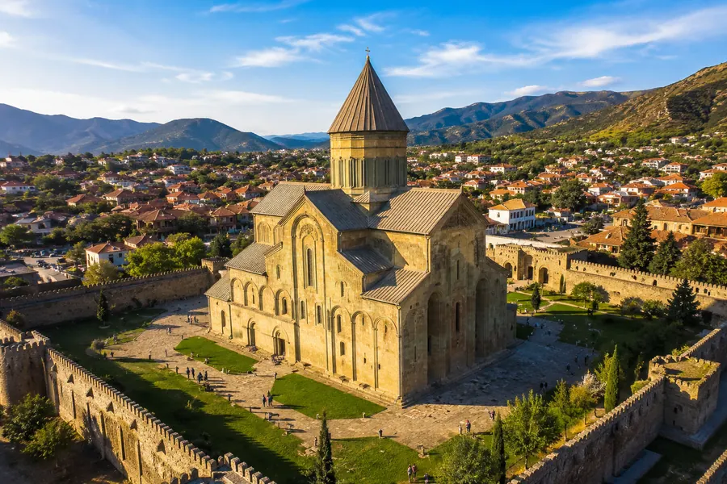
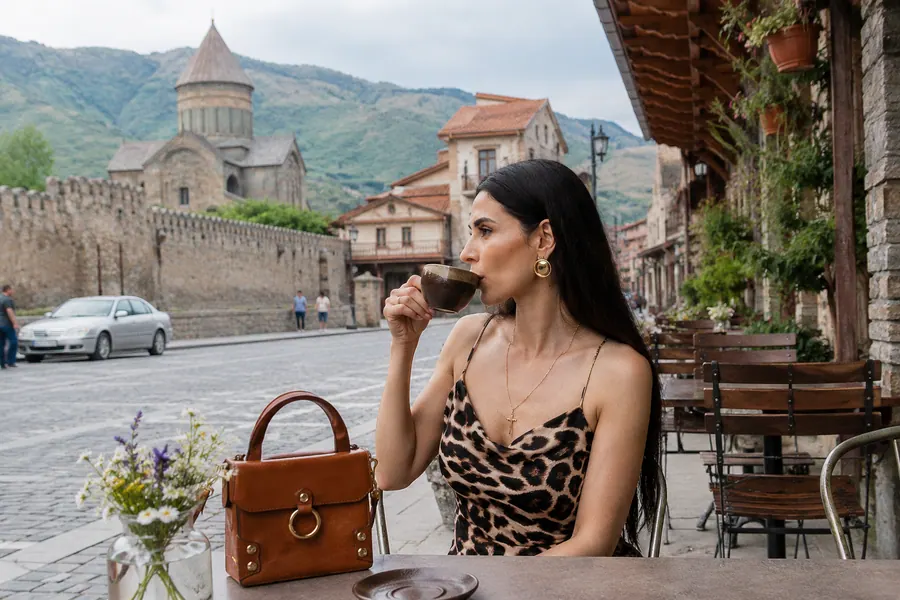
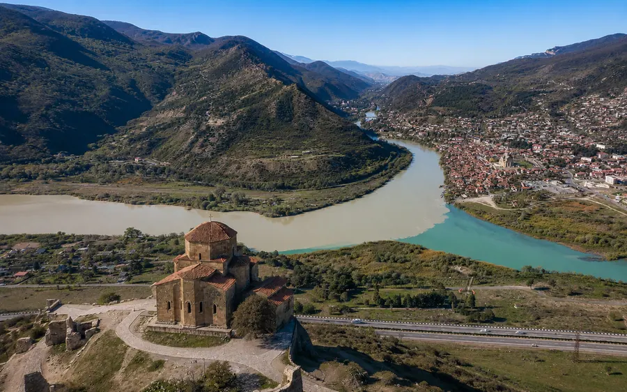
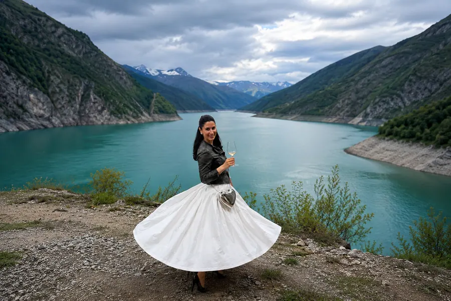
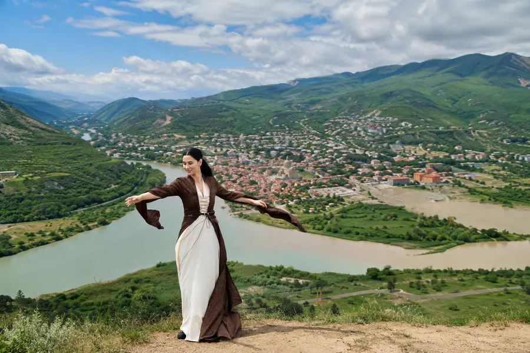
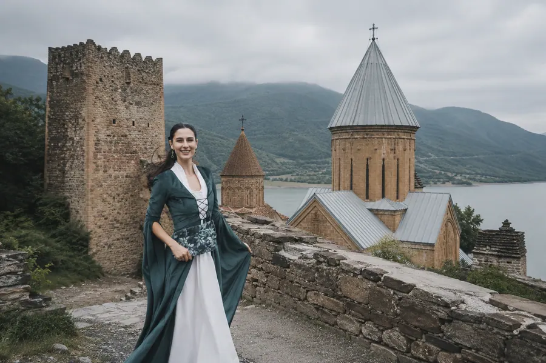
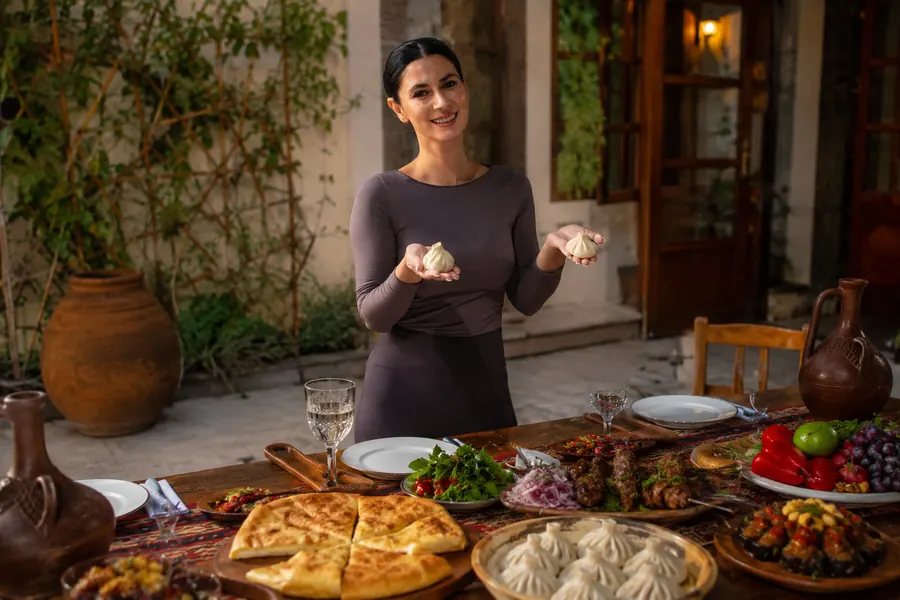

Мцхета и Ананури. История, горы и грузинское гостеприимство
Военно-Грузинская дорога, крепость Ананури и Светицховели.
- Формат
- Однодневная экскурсия
- Длительность
- 7–8 часов
- Стоимость
- от 370 $

Маршрут
- Тбилиси
- Джвари
- Жинвальское водохранилище
- Ананури
- Мцхета
- Тбилиси
В программе
- Монастырь Джвари
- Военно-Грузинская дорога и остановка у Жинвальского водохранилища
- Ананури, 16–17 века, крепость рода Арагвских эриставов
- Обед в грузинской семье, хозяйка бывший шеф-повар с авторскими рецептами, или в ресторане в Мцхете
- Светицховели
- Свободное время






Стоимость за группу
- 1–2 человекаседан или джип стандартный
- 370 $
- 3–4 человекаминивен 2025 года
- 480 $
- 5–6 человекминивен 2025 года
- 540 $
- 7–8 человекспринтер 2025 года
- 690 $
- 9–10 человекспринтер 2025 года
- 790 $
Входит
- Индивидуальный трансфер на весь маршрут
- Услуги квалифицированного гида
Оплачивается отдельно
- Дегустация домашних вин, 50 лари с человека
- Мастер-класс по выпечке грузинского хлеба, 25 лари с человека
- Мастер-класс по лепке хинкали, 25 лари с человека
- Обед в семье, 80 лари с человека
Условия
Обед, дегустация и мастер-классы оплачиваются отдельно и возможны для группы от 5 человек
Запросить программу
Напишите даты и количество гостей.